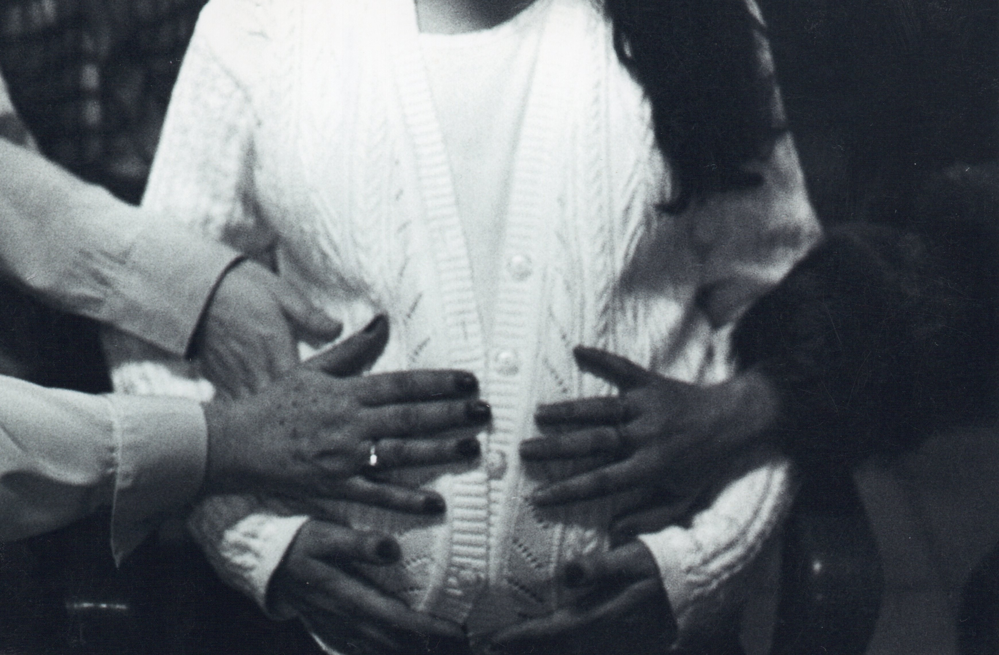

GUILLERMO LIBENSON
Serie Niños - En sus propias palabras
20/05/07 -Llegó la exposición fotográfica “Niños” a tomar estado público el 18/05/07, 20hs, en el Ceptur. Atrás quedaron dos años y medio transcurridos con distintas vicisitudes vividas, la selección de negativos, las copias de pruebas (200), la discusión, el análisis, los porqués, la programación en la práctica en los últimos ocho meses, los auspiciantes con la ayuda económica o no, la demora en la llegada de los marcos de B. Aires (no de Asia y por carreta) de seis meses, dificultades para el armado, la soledad, los agachados y deserciones, la burocracia cultural. El correcto manejo de los tiempos hizo que el 18/05/07 fuera una fiesta de alegría, emociones, lágrimas de más de 100 concurrentes con hijos tomados de las madres o a upa para ver las fotos y disfrutarlas. Este clima lo percibí al distribuir las invitaciones sin exclusiones (210) donde muchos descubrieron por 1° vez mi vieja pasión por la fotografía. He visto a la gente emocionarse, llorar, correr una lágrima, y el llanto constante al ver las imágenes, como la amplia sonrisa al reconocerse o imaginar que están dentro del cuadro. Los comentarios son conmovedores, según los expertos el número de visitantes ha superado a todas las exposiciones.
Jugando con la TV
Niña y sus muñecas

Primeros pasos

Mano tomando la pierna

Ivette y mano

Manos y embarazo
Madre embarazada y culito de bebé

Madre, tatuajes y bebe

Mano y pie
Sin Titulo